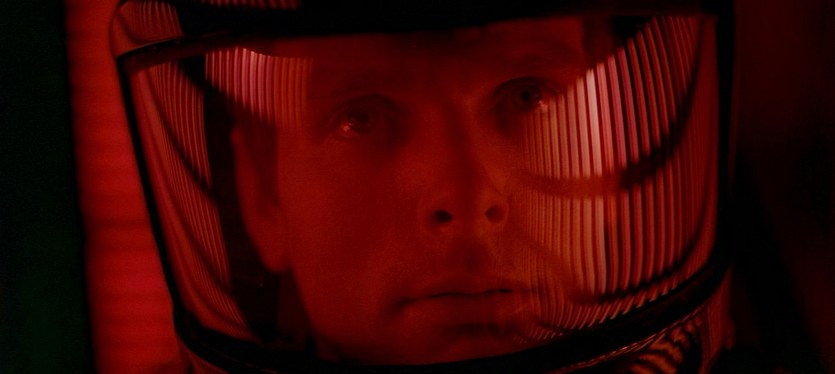
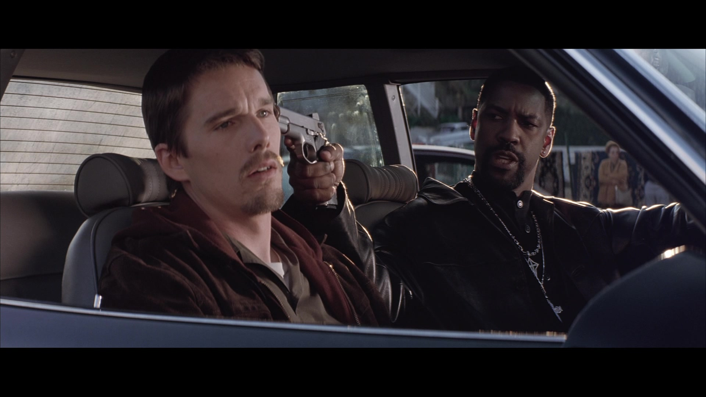
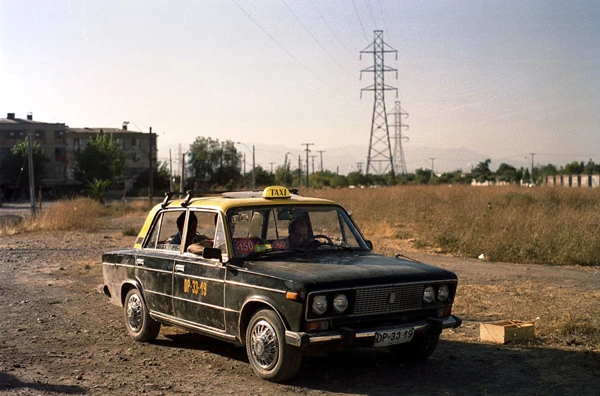
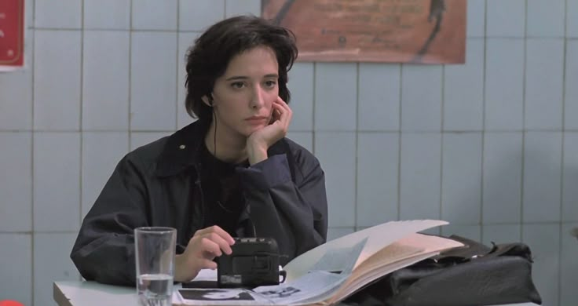

Filmoteca Senatibas
"Todas las películas tienen al menos cinco minutos buenos"
Nuestros proyectos
-
Training Day (2001)
El sargento Alonzo Harris, un agente de narcóticos con 13 años de experiencia cuyos discutibles métodos hacen difusa la línea entre la legalidad y la corrupción. Jake Hoyt, un joven policía recién asignado a narcóticos, comienza sus rondas a las órdenes de Alonzo para aprender de él.
-
Taxi para 3 (2001)
Un taxista agobiado por sus numerosas deudas decide asociarse con dos jóvenes ladrones desarraigados en esta comedia amarga sobre la sociedad chilena.
-
Tesis (1996)
Ángela, estudiante de Imagen, está preparando una tesis sobre la violencia audiovisual. Conoce a Chema, un compañero experto en cine gore y pornográfico, y a Bosco, un extraño chico, amigo íntimo de una joven asesinada en una snuff movie
Frase cinéfila del mes:
"Esto no es Vietnam, es boliche, hay reglas"
The Big Lebowski (1998)